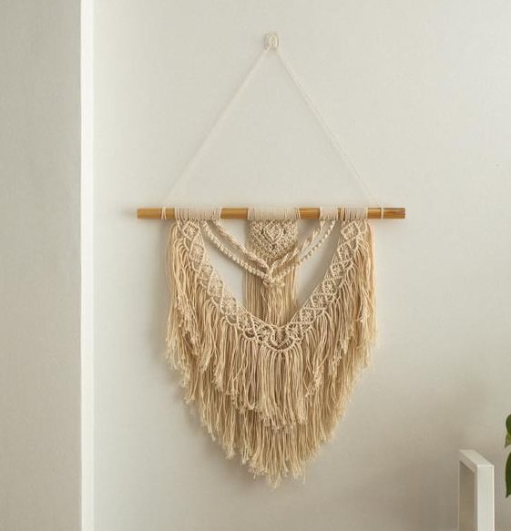

Macrame is a crafting technique that uses knots to create various textiles. Since this art form has regained popularity in recent years, crafters and artists are coming up with innovative ways to take macramé beyond the basic plant hangers and wall hangings. This age-old practice has gone in and out of popularity for thousands of years. However, this method will always be around to some degree because of its practicality.Remarkably, you can make items like table runners and key chains using just your hands and a couple of inexpensive supplies. The primary knots of macramé are the square (or reef knot) and forms of "hitching" various combinations of half hitches. It was long crafted by sailors, especially in elaborate or ornamental knotting forms, to cover anything from knife handles to bottles to parts of ships. Cavandoli macramé is one variety that is used to form geometric and free-form patterns like weaving. The Cavandoli style is done mainly in a single knot, the double half-hitch knot.  Reverse half hitches are sometimes used to maintain balance when working left and right halves of a balanced piece. Leather or fabric belts are another accessory often created via macramé techniques. Most friendship bracelets exchanged among schoolchildren and teens are created using this method. Vendors at theme parks, malls, seasonal fairs and other public places may sell macramé jewellery or decoration as well. Macrame is a technique or method of crafting a textile that uses several knots to form the basic shape and function of the piece. Each knot can be created with your hands, and there are no other tools required other than a mounting ring to keep the item in place while you work. For something to be considered macrame, the project should incorporate at least one macrame knot. In most cases, macrame projects are pieced together with several knots. In some cases, you can have macrame elements joined with other techniques like weaving or knitting.
Macramé is having a moment, but this isn't the first time. When most people think of macrame, their mind travels back to the bohemian-inspired wall hangings of the 1960s and '70s. To get to the origins of this method, some suggest the knotting began in the 13th century. Other historians believe that the ancient Persians and Babylonians used knotting in artifacts that date to BC centuries. In modern history, macrame was an art form that was brought west from Arabic countries. Weavers from this part of the world used several knotting techniques to finish the edges of woven tapestries, rugs, and shawls with fringe. The word macramé is derived from the Arabic miqramah, believed to mean "striped towel", "ornamental fringe" or "embroidered veil". Another school of thought indicates that it comes from Turkish makrama, "napkin" or "towel". The decorative fringes also helped to keep flies off camels and horses in northern Africa. The Moorish conquest took the craft to Spain, then Italy, especially in the region of Liguria, then it spread through Europe. In England, it was introduced at the court of Mary II in the late 17th century. Queen Mary taught it to her ladies-in-waiting. Macramé was most popular in the Victorian era. It adorned most homes in items such as tablecloths, bedspreads and curtains. The popular Sylvia's Book of Macramé Lace (1882) showed how "to work rich trimmings for black and coloured costumes, both for home wear, garden parties, seaside ramblings, and balls—fairylike adornments for household and underlinens. Sailors made macramé objects while not busy at sea, and sold or bartered them when they landed, thus spreading the art to places like China and the New World. Nineteenth-century British and American sailors made hammocks, bell fringes, and belts from macramé. They called the process "square knotting" after the knot they used most often. Sailors also called macramé "McNamara's lace”. Macramé's popularity faded, but resurged in the 1970s for making wall hangings, clothing accessories, small jean shorts, bedspreads, tablecloths, draperies, plant hangers and other furnishings. Macramé jewellery became popular in America. Using mainly square knots and granny knots, this jewellery often features handmade glass beads and natural elements such as bone and shell. Necklaces, anklets and bracelets have become popular forms of macramé jewellery. By the early 1980s, macramé again began to fall out of fashion. Eventually, Victorians were knotting textiles during the 18th and 19th centuries until the technique was largely replaced with sewing machines after the Industrial Revolution. The hand-knotting became popular again in the late '60s and '70s but was quickly out of fashion in the 1980s.
Material Jute, Twine, Yarn, Hemp, Leather, Mounting rings and Wooden beads. Cords are identified by construction, such as a 3-ply cord, made of three lengths of fibre twisted together. Jewellery is often made in combination of both the knots and various beads (of glass, wood, and so on), pendants or shells. Sometimes 'found' focal points are used for necklaces, such as rings or gemstones, either wire-wrapped to allow for securing or captured in a net-like array of intertwining overhand knots. A knotting board is often used to mount the cords for macramé work. Cords may be held in place using a C-clamp, straight pins, T-pins, U-pins, or upholstery pins. For larger decorative pieces, such as wall hangings or window coverings, a work of macramé might be started out on a wooden or metal dowel, allowing for a spread of dozens of cords that are easy to manipulate. For smaller projects, push-pin boards are available specifically for macramé, although a simple corkboard works adequately. Many craft stores offer beginners' kits, work boards, beads and materials ranging in price for the casual hobbyist or ambitious craftsperson.